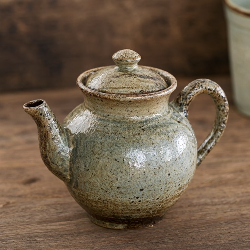
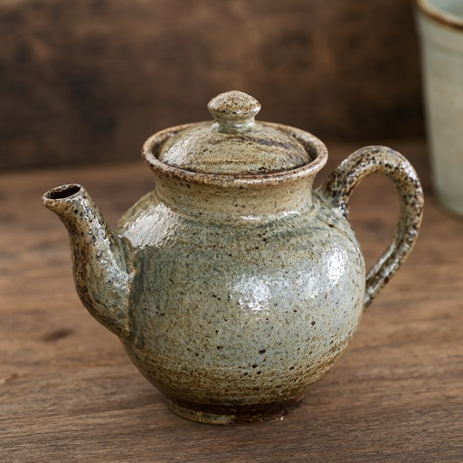

VLLM-OMNI · QWEN-IMAGE-2.1 · PR #9040 + #10376 · 均为 OPEN
Qwen-Image-2.1 混合长度组批的
吞吐优化与输出一致性修复。
Qwen-Image-2.1 把布局相同的请求合批，prompt 长短不一时短请求需补 padding。#9040 消除 padding 导致 decode 丢失 CUDA Graph 的吞吐损失；#10376 定位并修复混合长度批次的输出漂移——图像 RoPE 位置随 padding 偏移。
PART 1 · PR #9040 · 先追吞吐
01 · padding 从哪里来
合批要求文本张量等长，短 prompt 左侧补 padding。
目标是在并发下提高成功生成的 images/s。同一批请求的文本张量要对齐形状。长度一致时，decode 可以走预先捕获的 CUDA Graph；只要出现 padding，main 的日志就记录一次 padded-text-mask eager 回退。拖动滑块改变请求 B 的长度。
蓝色是真实 token，斜纹是 padding。token 数为示意。
02 · 改的是组批的 key
prompt 长度纳入合批兼容性 key，等长请求仍然合批。
没有重写调度器，只改了判断“哪些请求能放进同一批”的 key。开启 true CFG 时，negative prompt 的长度也要一致。graph 关闭或拿不到 tokenizer 时，退回原来不看长度的组批，因为这些情况下本来就不走 graph。切换选项，看 6 个请求怎么分组。
请求与长度为示意；分组规则与 PR 描述一致。请求顺序由原有调度器保持。
03 · 实测吞吐
混合长度组吞吐提升，等长对照组持平。
每组 2 个请求，main 与 PR 各跑 1 次预热和 2 次正式测量，吞吐 = 完成图片数 / 墙钟时间。12 / 12 个请求全部完成，54 个针对性兼容测试通过。只有两次测量，只支持局部结论。
04 · 对照输出时发现的问题
分组后输出与 main 不一致，漂移源自 main 的混合长度批次。
按理说组批方式不该改变每个请求的结果。但等长组 H1 逐像素一致，混合长度组的输出却和 main 有明显差异。#9040 的 L0 输出与单独串行生成的参考图 SHA-256 一致，说明 #9040 给的是“对的”结果，偏掉的是 main 上的混合长度批次：同一个请求的输出，会随同批的其他请求变化。
| 组 / 请求 | PSNR (dB) vs main | SSIM | 观察 |
|---|---|---|---|
| H1 · 两个请求 | 相同 | 1.00000 | 4 / 4 对输出逐像素一致 |
| L0 · 短 prompt | 28.77 | 0.97213 | #9040 输出与串行参考 SHA-256 一致 |
| L0 · 长 prompt | 36.85 | 0.99184 | #9040 输出与串行参考 SHA-256 一致 |
| L1 · 短 prompt | 46.61 | 0.99646 | 同批上下文差异较小 |
| L1 · 长 prompt | 56.87 | 0.99883 | 同批上下文差异较小 |
PART 2 · PR #10376 · 再追正确性
05 · 把现象固定下来
等长批次输出接近，混合长度批次明显漂移。
在 eager 服务下固定请求 R 的 prompt、seed 和参数，分别单独运行、放进 3 个等长 prompt 的批次 (wave B)、放进带两个更长 prompt 的批次 (wave C)。调度日志确认两个 wave 都是真实的 3 请求批次。PSNR 都是和单独运行比。

参照

43.99 dB

27.94 dB
图片来自 PR 描述，50 步。等长批与单独运行的 43.99 dB 是批处理本身带来的正常数值差。
06 · 根因
图像 RoPE 帧位置，随整批 padding 后的文本长度偏移。
RoPE 给每个 token 编码位置。QwenImage21Rope.forward 为整批只建一张表：文本 token 推进一个共享的位置计数，图像块的帧轴位置从它接着算。文本按整批最长的 prompt 左侧补齐——和第一部分里拖垮 CUDA Graph 的是同一份 padding——R 的 17 个文本 token 前面多了 47 个 padding，图像的帧位置从 17 被推到 64。
斜纹是 padding，蓝色是 R 的文本，绿色是 R 的图像 token。长度按比例示意。
07 · 怎么确认是它
逐项消除批次间差异，定位触发漂移的那一项。
批次之间不只 RoPE 不同：文本编码器的输出、DiT 注意力掩码的路径也会变。在 8 步去噪下依次消掉这些差异，每一步都测 R 在 wave B 与 wave C 之间的 PSNR。
让文本编码器输出完全一致、让两批走同一条注意力掩码路径，都没有变化；把 R 的图像帧位置放回 17，漂移基本消失，第一层 DiT 注意力输出的平均绝对差从 0.375 降到 0.0017。
条形只表示定性结论，逐步 PSNR 见 PR 原图。“硬编码位置”只对这一批里的 R 正确，会让更长的请求拿到错误位置，所以它是诊断，不是修复。
08 · 修复
按各请求自身 padding 回退帧位置，RoPE 表改为逐请求计算。
文本有 padding 时，QwenImage21SequencePrepare 把逐请求的文本有效掩码传给 QwenImage21Rope。每一行的帧索引减去这一行自己的 padding 数，于是每个请求拿到的位置和它单独运行时一样。高、宽方向的频率不变，仍然共享。
只有同时满足这四个条件才走新路径；等长批、单请求、序列并行和非 CUDA 设备仍用原来的二维表。和 #9040 的分工是：#9040 让能走 graph 的批次不混长度、换回吞吐；#10376 让仍然混在一起的批次算对，不减少合批，也不依赖 #9040。
09 · 结果
漂移回到正常批处理水平，每步耗时不变。
50 步时，R 在等长批与混合长度批之间的 PSNR 从 27.66 dB 升到 45.16 dB，SSIM 0.964 → 0.997，略高于单独运行和等长批之间本来就有的 43.99 dB。
再换批大小。20 步，每个点 4 个 wave（main 和 #10376 在两张卡上并行，再交换卡重跑），52 个请求全部成功。漂移是 R 相对同次运行中等长批 R 的 PSNR。
| 批次 | main | #10376 |
|---|
10 · 验证与边界
两个 PR 的测试覆盖，与尚未验证的边界。
- #9040：54 个针对性兼容测试通过，覆盖正负 prompt 长度、省略与空 negative prompt、等长合批、混合长度分开、两种调度器和 graph 关闭回退。
- #10376：新增 3 个单元测试，左侧 padding 批次每一行的频率与该请求单独计算一致，批量与逐请求旋转结果一致；
qwen_image_21测试目录 246 通过、10 跳过（main 243 通过）。等长批下与 main 输出逐位相同。
- #9040 只有两次测量，只支持局部吞吐结论；合入新 main 后 GPU 推理和针对性测试尚未重跑；未覆盖 4 张参考图、多 GPU、2048²。
- #10376 输出明显更接近，但不是逐位批不变；速度在 SM120 上测量，SM103 + PyTorch 2.13 上混合长度批会失去融合 RoPE kernel，未测；未测图像编辑、true CFG、CUDA Graph 服务、序列并行、非 CUDA 设备。